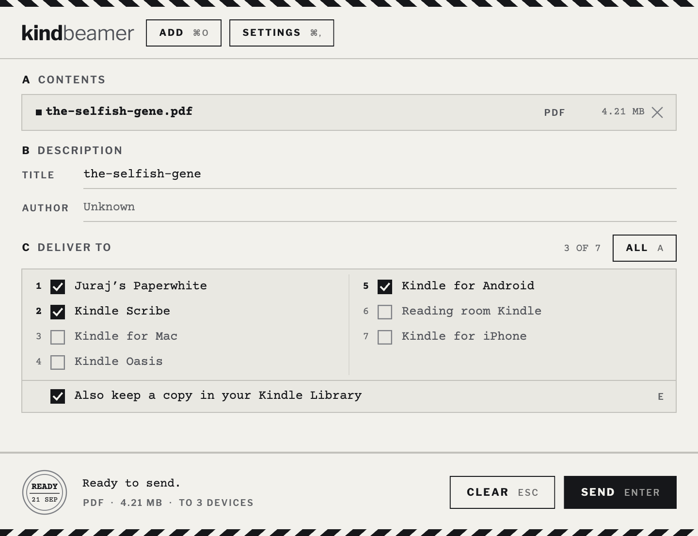

Send your documents to your Kindle from your own machine.
A GET IT
macOS ships as a .dmg, Linux as a tarball for x86-64 and arm64, Android as an APK, or from Zapstore, which keeps it updated. Linux is the one that needed doing: Amazon never wrote a desktop client for it.
B WHAT IT IS
KindBeamer is an open-source client for Amazon's Send to Kindle service. Open a PDF or an EPUB with it, press Enter, and it turns up on the Kindles you picked.
It runs on macOS, Linux and Android. Nothing passes through a server of mine, because there isn't one.
C WHAT IT LOOKS LIKE

D KEYS
Built for people who would rather not reach for the mouse. It behaves itself in a tiling window manager, and the keys are printed on the window, so there is nothing to memorise.
| ENTER | Send |
| ESC | Clear the queue; again to close the window |
| 1 … 9, 0 | Tick the device on that line |
| A | All devices, or none |
| E | Keep a copy in your Kindle library |
| ? | The card that lists all of this |
A delivered send closes the window by itself. A failed one stays, and says why.
BTW
The book in that screenshot is a real one, and mine. Tamers of Entropy is a lunarpunk novel about identity, parallel spaces, AI, space and expanding consciousness. Paperback, ebook and audiobook, in English, Slovak and Czech.